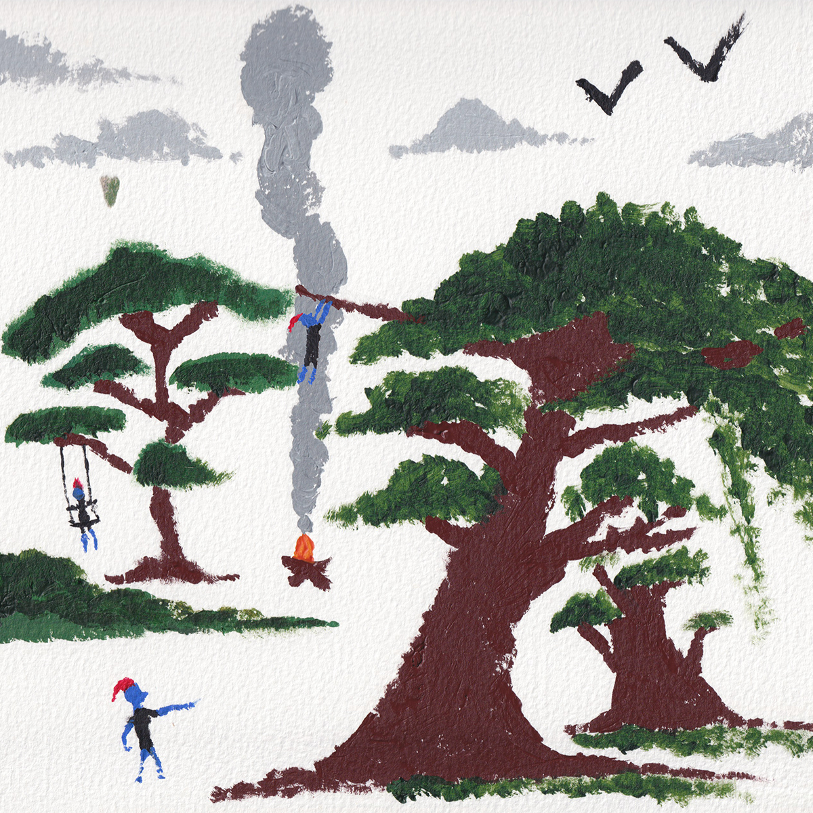

Tales from the Kingdom

1. Welcome to the Kingdom
Your browser does not support the audio element.
2. Hang the Traitor
Your browser does not support the audio element.
3. The Trial
Your browser does not support the audio element.
4. Don't Go Down Below
Your browser does not support the audio element.
5. Dreams (of the Past)
Your browser does not support the audio element.
6. Dreams (of the Past) Reprise
Your browser does not support the audio element.
7. Danger
Your browser does not support the audio element.
8. Flames
Your browser does not support the audio element.
9. I am Home
Your browser does not support the audio element.
Created by Joe, Jake, Finley and Corin
Thank You